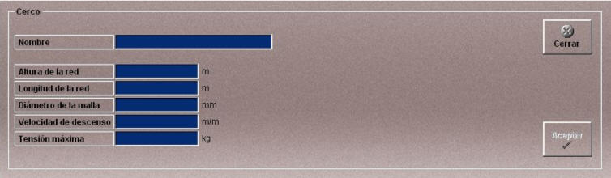

Cerco
La creación y edición de artes de cerco se realiza mediante la siguiente ventana.

Esta ventana permite definir el arte de pesca de cerco que podrá ser añadido a las unidades participantes en los Ejercicios.
Se definen los siguientes datos:
Nombre: Nombre del arte de cerco.
Formato: caracteres alfanuméricos.
Altura de la Red: Es la medida en altura de la red una vez largada, es decir, desde la superficie hasta el borde inferior.
Unidades: metros
Rango: 0.00- 300.00
Longitud de la Red: Longitud máxima de la red.
Unidades: metros
Rango: 0.00- 6300.00
Diámetro de la Malla: Diámetro de la malla.
Unidades: milímetros
Rango: 0.00- 500.00
Velocidad de Descenso: Velocidad de descenso de la red.
Unidades: metros/minuto
Rango: 0.00- 300.00
Tensión Máxima: Máxima tensión que soporta el cable de la red.
Unidades: kilogramos
Rango: 0.00- 1000000.00